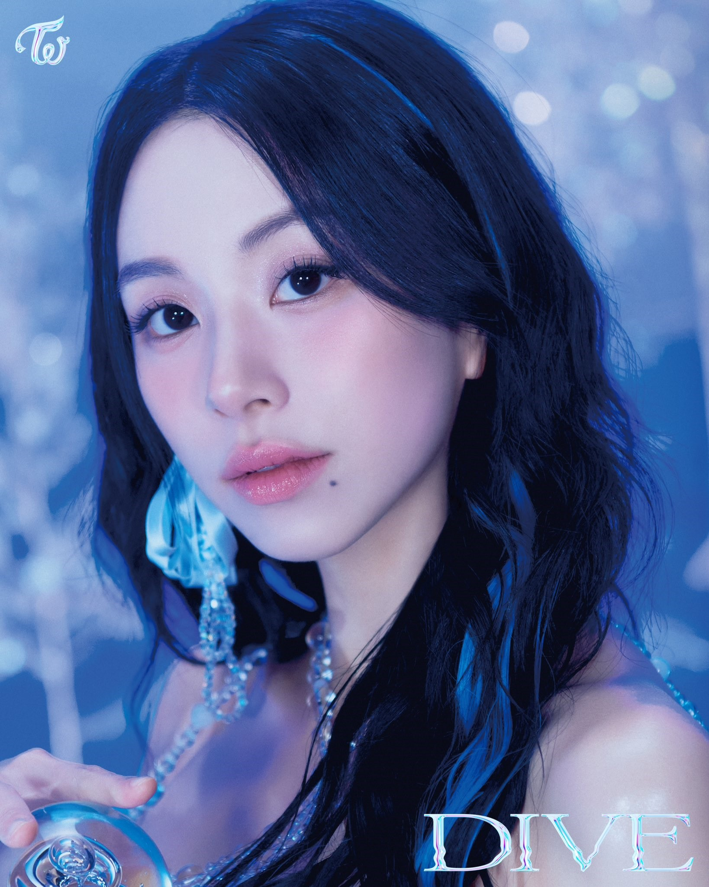

Twice
Twice is a South Korean girl group formed by JYP Entertainment. The group is composed of nine members: Nayeon, Jeongyeon, Momo, Sana, Jihyo, Mina, Dahyun, Chaeyoung, and Tzuyu.
Twice debuted in 2015 under JYP Entertainment with the hit song "Like Ohh-Ahh". They are best known for their cuter and more girly concepts, and eye-catching choreographies. The name was chosen based on the concept that the group would be able to captivate their audience twice - once through their music and once through their visuals. Park explained that the group's name represents their ability to "move people twice" through both their auditory and visual appeal. December 13, 2022.
MEMBERS
Jihyo (지효)
Park Ji-hyo (Korean: 박지효; born Park Ji-soo, February 1, 1997), known mononymously as Jihyo, is a South Korean singer. She is the leader and vocalist of the South Korean girl group Twice, formed by JYP Entertainment in 2015.

Chaeyoung (채영)
Son Chae-young (Korean: 손채영; born April 23, 1999), known mononymously as Chaeyoung, is a South Korean rapper and singer. She is a member of the girl group Twice, formed by JYP Entertainment.
Nayeon (나연)
Im Na-yeon(Korean: 임나연; born September 22, 1995), known mononymously as Nayeon, is a South Korean singer. She rose to prominence as a member of the South Korean girl group Twice, created by JYP Entertainment through the reality television show Sixteen (2015).
Jeongyeon (정연)
Yoo Jeong-yeon (Korean: 유정연; born 1 November 1996), known mononymously as Jeongyeon (Korean: 정연), is a South Korean singer. She is a member of Twice, a South Korean girl group formed by JYP Entertainment.
Momo (모모)
Momo Hirai (Japanese: 平井 もも, Hepburn: Hirai Momo, 平井 桃; born November 9, 1996) known mononymously as Momo (Korean: 모모; Japanese: モモ), is a Japanese singer, rapper, and dancer based in South Korea. She is a member of South Korean girl group Twice under JYP Entertainment.
Sana (사나)
Sana Minatozaki (Japanese: 湊﨑 紗夏, Hepburn: Minatozaki Sana, born December 29, 1996), known mononymously as Sana (Korean: 사나; Japanese: サナ), is a Japanese singer based in South Korea. She is a member of the South Korean girl group Twice, formed in 2015 by JYP Entertainment
Mina (미나)
Mina Myoi (Japanese: 名井 南, Hepburn: Myōi Mina, born Mina Sharon Myoi; March 24, 1997), known mononymously as Mina (Korean: 미나; Japanese: ミナ), is a Japanese singer and dancer based in South Korea. She is a member of the South Korean girl group Twice, formed by JYP Entertainment in 2015.
Dahyun (다현)
Kim Da-hyun (Korean: 김다현; born May 28, 1998), known mononymously as Dahyun, is a South Korean singer, rapper, and actress. She is a member of the South Korean girl group Twice, formed by JYP Entertainment in 2015.
Tzuyu (쯔위)
Chou Tzu-yu (Chinese: 周子瑜; Pe̍h-ōe-jī: Chiu Chú-jû; born June 14, 1999), known mononymously as Tzuyu (Korean: 쯔위, Korean pronunciation), is a Taiwanese singer based in South Korea. She is a member of the South Korean girl group Twice, formed by JYP Entertainment in 2015.
0:00 - 0:00